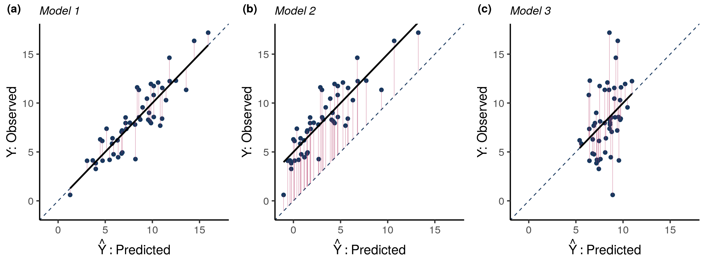
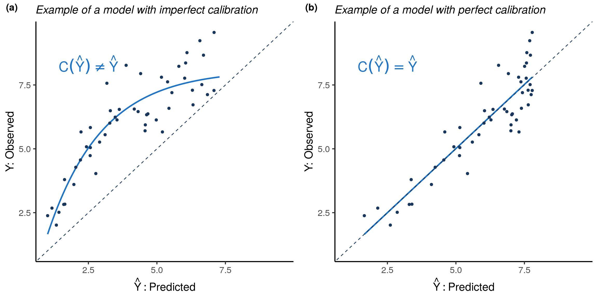
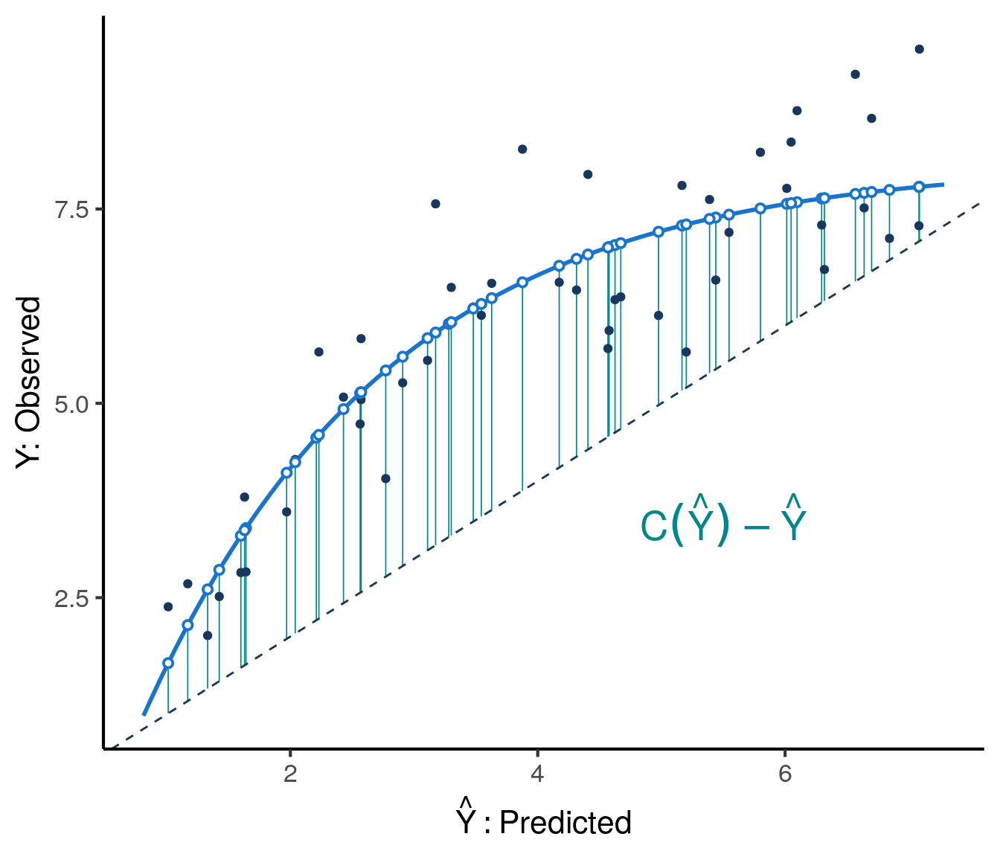
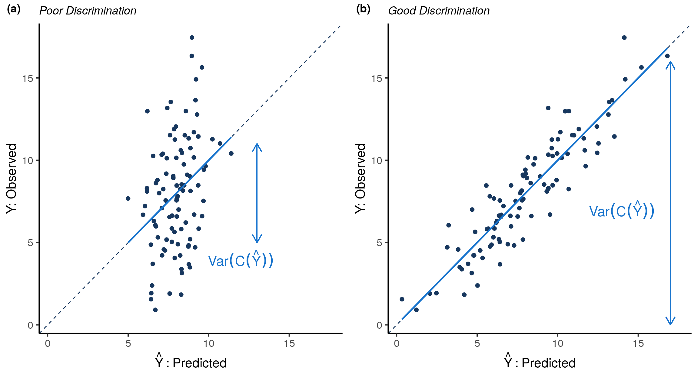
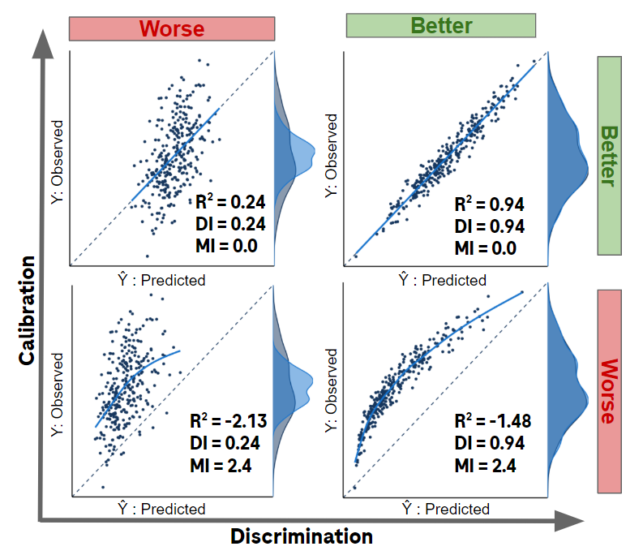
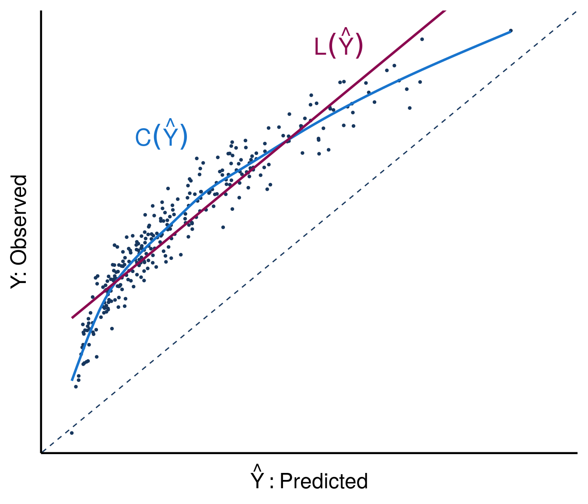
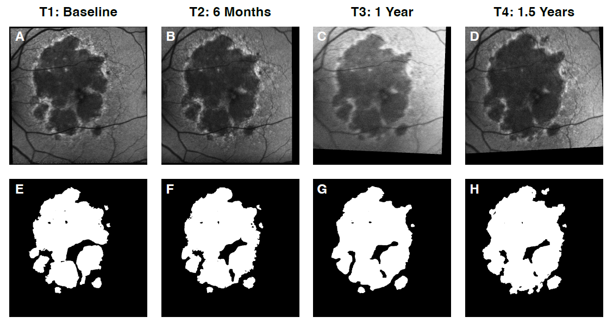
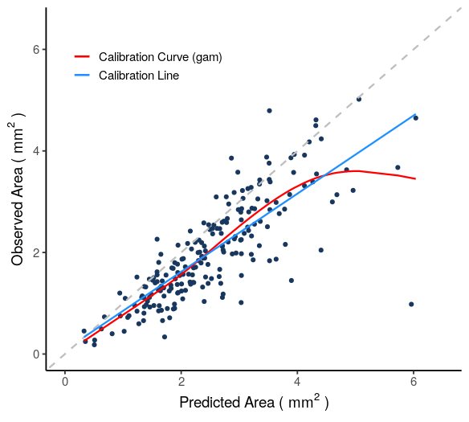

\[\\[.02in]\]
There are two steps to state-of-the-art clinical prediction model performance evaluation. The first step, often referred to as overall model performance evaluation, involves interrogating the general quality of predictions in terms of how close they are to observed outcomes. Overall model performance is assessed via three general concepts that are widely applicable: accuracy, discrimination and calibration (Steyerberg et al., 2010, 2014).
There is some confusion around the relationship between accuracy, discrimination and calibration and what the best approach is to evaluate these concepts. This post aims to provide some clarity via a remarkable decomposition of \(R^2\) that beautifully unifies these three concepts. While similar decompositions have existed for decades in meteorological forecasting (Murphy, 1973), we wish to call greater attention to this underutilized evaluation tool and provide additional insights based on our own scaled version of the decomposition. Part 1 of this post provides details around which existing and newly proposed performance metrics to use for an overall assessment of prediction model quality. We will reveal how the suggested metrics are affected by transformations of the predicted values, explain the difference between \(R^2\) and \(r^2\), demonstrate that \(R^2\) can indeed be negative, and give practical guidance on how to compare the metrics to gain information about model performance. Part 2 of the post explains how the metrics and decompositions discussed here are applicable to binary outcomes as well and can also be generalized beyond the familiar squared error loss.
While accuracy, calibration, and discrimination provide important insights into the overall quality of the predictions, they are not direct metrics of the model’s fitness for use in a particular application. Therefore, for a complete performance evaluation, the second step is to evaluate utility using tailored metrics and visualizations. For example, if a model’s predictions are intended to be used as a covariate for a trial’s adjusted primary endpoint analysis, the effective sample size increase metric evaluates the expected precision gains from the adjustment (Schiffman et al., 2023). Another example is net benefit decision curves, an elegant decision-analytic metric for assessing the utility in clinical practice of prognostic and diagnostic prediction models (Calster et al., 2018; Vickers et al., 2006). The focus of this post, however, will be only on the first step of general model performance evaluation, and further discussion around assessing a model’s clinical utility is beyond its scope.
This blog mostly focuses on defining and characterizing population level performance metrics. However, how to estimate metrics of these performance characteristics is covered in a later section.
Accuracy
The central desirable property of a prediction model is accuracy. An accurate model is one for which predicted outcomes \(\hat{Y}\) are close to observed outcomes \(Y\), as measured with a scoring rule. A scoring rule is a function of \(\hat{y}\) and \(y\) that assigns a real value score \(s(\hat{y},y)\). Without loss of generality, we follow the convention of using scoring rules with negative orientation, meaning larger scores represent greater discrepancies between \(\hat{y}\) and \(y\). One such example is the quadratic loss (or squared error) scoring rule, \(s(\hat{y},y)=(\hat{y}-y)^2\). Quadratic loss is one of the most common scoring rules because of its simplicity, interpretability and because it is a strictly proper scoring rule (see Part 2 of this post for more details on proper scoring rules) (Fissler et al., 2022).
The mean squared error (\(\mathrm{MSE}\)) of a prediction model is its expected quadratic loss,
\[\mathrm{MSE} = \mathbb{E}\big[(Y-\hat{Y})^2\big] \tag{1}\]
We assume that the evaluation of prediction models is done on an independent test data set not used in the development of the model. Therefore, the expectation in Equation 1 would be taken over an independent test set and the error would be referred to as generalization error, as opposed to in-sample error (Fissler et al., 2022). We make a quick note here that it is often convenient to work with \(R^2=1-\frac{MSE}{Var(Y)}\), a scaled version of \(\mathrm{MSE}\). \(R^2\) will be revisited later on in this post.
Figure 1 is a visual aid for understanding \(\mathrm{MSE}\) as a metric of accuracy and what performance qualities affect it. Predicted outcomes \(\hat{Y}\) are shown on the x-axis vs. observed outcomes \(Y\) on the y-axis for three different models (panels (a)-(c)). Red vertical lines show the distance between \(Y\) and \(\hat{Y}\). \(\mathrm{MSE}\) is the average of the squared lengths of these red lines.
For Model 1 in panel (a) of Figure 1, data points are relatively close to the trend line which in this case is the identity line (\(Y=\hat{Y}\)), so there is little difference between predicted and observed outcomes. The closer data points are to the identity line, the smaller the average length of the red lines and the smaller the \(\mathrm{MSE}\).
What would increase the distance between \(Y\) and \(\hat{Y}\)? For Model 2 in Figure 1 (b), data points still have little variability around the trend line, but now the trend line is no longer equal to the identity line. The predictions from Model 2 are systematically biased. This increases the \(\mathrm{MSE}\), illustrated by the increase in the average length of the red lines for Model 2 compared to Model 1.
Like Model 1, the trend line for Model 3 in Figure 1 (c) is the identity line and predictions are not systematically biased. However, there is more variability around the trend line. In other words, the predictions from Model 3 explain less of the variability in the outcome. The average length of the red lines increases as less of the outcome variability is explained by the predictions.
Figure 1 illustrates how \(\mathrm{MSE}\) is yet another quantity that is impacted by the two concepts of bias and variance. In the context of predictive modeling, these two concepts are referred to as calibration and discrimination, respectively, and will be formally defined in the upcoming sections. Later we will derive a mathematical decomposition of accuracy into these two components to obtain a simple quantitative relationship between accuracy, calibration, and discrimination.
Calibration
Calibration is the assessment of systematic bias in a model’s predictions. The average of the observed outcomes for data points whose predictions are all \(\hat{y}\) should be close to \(\hat{y}\). If that is not the case, there is systematic bias in the model’s predictions and it is miscalibrated. Visually, when plotting predicted outcomes on the x-axis vs. observed outcomes on the y-axis, the model is calibrated if points are centered around the identity line \(Y=\hat{Y}\), as they are in Figure 2 panel (b).

More formally, define the calibration curve to be the function \(\mathrm{C}(\hat{y}) = \mathbb{E}[Y \mid \hat{Y} = \hat{y}]\). A model is calibrated if and only if \(C(\hat{Y}) = \mathbb{E}[Y \mid \hat{Y} ] = \hat{Y}\). As illustrated in Figure 3, miscalibration is numerically defined to be the expected squared difference between the predictions and the calibration curve, \(E\big[(C(\hat{Y}) - \hat{Y})^2\big]\). Using the calibration curve, we define the miscalibration index (\(\mathrm{MI}\)) as miscalibration normalized by the variance of \(Y\). Clearly \(\mathrm{MI}\geq0\) and \(\mathrm{MI}=0\) if and only if the model is perfectly calibrated. A model can be recalibrated by transforming its predictions via the calibration curve \(C(\hat{Y})\) (proof in the Appendix), in other words by applying the function \(C(\hat{Y}) = \mathbb{E}[Y \mid \hat{Y}]\) to the model’s predictions.
Miscalibration Index (MI)
The Miscalibration Index (MI) is the \(MSE\) between \(C(\hat{Y})\) and \(\hat{Y}\) normalized by \(Var(Y)\)
\[ MI = \frac{E\big[(C(\hat{Y}) - \hat{Y})^2\big]}{Var(Y)} \tag{2}\] \(MI\geq0\) and \(\mathrm{MI}=0\) iff the model is perfectly calibrated

A growing number of researchers are calling for calibration evaluation to become a standard part of model performance evaluation (Calster et al., 2019). This is because for many use cases calibration is an important component of prediction quality that impacts utility. For example, calibration is very important when the prediction model is intended to be used in medical practice to manage patients. Since decisions in such scenarios are based on absolute risks, systematic deviations from true risks can lead to suboptimal care. While the importance of calibration varies depending on the use case, it is simple enough to examine that it should be a routine part of model performance evaluation (Calster et al., 2019).
As demonstrated in Figure 1 (c), while calibration is important, it does not assess the spread of the expected outcome values. For example, a constant prediction model \(\hat{Y}=\mathbb{E}(Y)\) is calibrated (since \(\mathbb{E}[Y|\hat{Y}=\mathbb{E}(Y)]=\mathbb{E}(Y)\)), but it has zero variance of the expected outcome values and thus no ability to discriminate between observations.
Discrimination
The two models shown in Figure 4 are both calibrated, but the model in panel (b) has better discrimination than the model in panel (a). Compared to the model in panel (a), the model in panel (b) explains the true outcome \(Y\) with less spread around the calibration curve \(\mathrm{C}(\hat{Y})\), which in this instance is the identity line. For a given outcome distribution \(Y\), less spread around \(\mathrm{C}(\hat{Y})\) translates into a larger variation in \(\mathrm{C}(\hat{Y})\). Thus there are two equivalent ways to view discrimination, either as the amount of explained variability in the outcome or as the variance of the calibration curve.

To formalize this concept, define discrimination as the variance of the calibration curve, \(Var(C(\hat{Y}))\). We then define the Discrimination Index \(\mathrm{(DI)}\) as discrimination scaled by \(Var(Y)\).
Discrimination Index (DI)
The Discrimination Index (DI) is the variance of the calibration curve \(C(\hat{Y})\) scaled by \(Var(Y)\)
\[ DI = \frac{Var(C(\hat{Y}))}{Var(Y)} \tag{3}\]
\(0\leq DI\leq1\)
The more variability in the observed outcomes explained by the predictions, the larger the variance in \(C(\hat{Y})\) and the larger the \(\mathrm{DI}\). For example, the model in Figure 4 panel (b) has a larger \(\mathrm{DI}\) than the model in panel (a). In general, \(\mathrm{DI}\) is a non-negative number that can be at most \(1\) (proof in Appendix). If a model’s predictions explain virtually all of the variability in the observed outcomes, then \(\mathrm{DI}\approx1\). Unlike \(\mathrm{MI}\), \(\mathrm{DI}\) is unchanged by calibrating the model (proof in Appendix).
A Fundamental Decomposition of \(R^2\)
Now that calibration and discrimination are well-defined, we return to model accuracy. Recall that \(\mathrm{MSE}\), the expected quadratic loss over an independent test set, is an accuracy metric. We noted earlier that \(\mathrm{MSE}\) depends on the scale of \(Y\). It is therefore sensible to normalize the \(\mathrm{MSE}\) by the total variance, \(Var(Y)\). Finally, subtracting from 1 gives another well-known accuracy metric, \(R^2\):
\[ \begin{align} R^2 = 1-\frac{\mathrm{MSE}}{Var(Y)} \end{align} \tag{4}\]
Equation 5 shows that \(\mathrm{MSE}\) can be decomposed into the total variation of the observed outcomes, the variance of the calibration curve, and the mean squared error between the calibration curve and predictions (see proof in the Appendix):
\[ \begin{align} \mathrm{MSE} &= Var(Y) - Var(\mathrm{C}(\hat{Y})) + \mathbb{E}\big[(\mathrm{C}(\hat{Y}) - \hat{Y})^2 \big] \\ \end{align} \tag{5}\]
Replacing the numerator in Equation 4 with the \(\mathrm{MSE}\) decomposition from Equation 5, it can be easily shown how \(R^2\) is affected by miscalibration and discrimination.
The Fundamental Decomposition of \(R^2\)
\[ \begin{align} R^2& = DI - MI \end{align} \tag{6}\]
This wonderfully simple decomposition of \(R^2\) into the difference between \(DI\) and \(MI\) disentangles the concepts of accuracy, calibration and discrimination. The decomposition reveals that \(R^2\) holds valuable information on model performance.
Some very useful observations follow directly from this decomposition:
- Since \(MI \geq 0\) and \(0 \leq DI\leq 1\), \(R^2 \leq 1\). In fact, \(R^2\) can be negative due to miscalibration!
- Calibrating a model or increasing its discriminatory power increases accuracy.
- If \(R^2 < DI\), accuracy can be improved by calibrating the model. \(R^2\) will equal \(\mathrm{DI}\) for the calibrated model.

Figure 5 demonstrates four examples of the fundamental decomposition. The models in the bottom row of Figure 5 have imperfect calibration (\(MI>0\)),and thus accuracy can be improved via calibration. The top row of Figure 5 is the result of calibrating the bottom row models; \(\mathrm{DI}\) remains the same but \(\mathrm{MI}=0\) after calibration and thus \(R^2\) increases. Although both models in the top row of Figure 5 have perfect calibration, the model on the right has better discrimination and thus greater \(R^2\).
Similar concepts and decompositions have been discussed since the 70’s and 80’s, in many cases developed with a focus on binary outcomes (DeGroot et al., 1983; Dimitriadis et al., 2021; Murphy, 1973). Part of the appeal of these decompositions, including our proposed Fundamental Decomposition, is that they apply to both continuous and binary outcomes, assuming that binary outcomes are coded with values in {0,1}. In historical and recent literature, the terms reliability, resolution and uncertainty are sometimes used instead of calibration, discrimination and variance of the observed outcome.
Linear Recalibration
We have already introduced recalibration via the calibration curve \(C(\hat{Y})\), but there is also linear recalibration. Linear transformations are easier to estimate than unconstrained calibration curves, and may be more appropriate for smaller sample sizes.
As illustrated in Figure 6, the linear transformation of predictions that maximizes \(R^2\) is referred to as the calibration line:
\(L(\hat{Y})=\alpha_{opt} + \beta_{opt}\hat{Y}\) is referred to as the calibration line where
\[ \begin{align} (\alpha_{opt} , \beta_{opt}) =argmin_{\alpha,\beta} \mathbb{E}\big[\big(Y-(\alpha + \beta\hat{Y})\big)^2\big] \\ \beta_{opt}=\frac{Cov(Y,\hat{Y})}{Var(\hat{Y})} \\ \alpha_{opt} = \mathbb{E}[Y] - \beta_{opt}\mathbb{E}[\hat{Y}] \space \\ \end{align} \tag{7}\]
\(L(\hat{Y})\) is the linear transformation that maximizes \(R^2\).

Not surprisingly, \(\alpha_{opt}\) and \(\beta_{opt}\) are the familiar population least squares linear regression coefficients for a linear model with an intercept and single predictor (proof in Appendix). \(\alpha_{opt}\) and \(\beta_{opt}\) are also referred to as the calibration intercept and slope, respectively.
When predictions are transformed via the calibration line, \(R^2\) is equal to the squared Pearson correlation between the predictions and the observed outcomes, \(R^2=r^2 = cor^2(Y,\hat{Y})\) (see Appendix for proof). Note that, in general, \(R^2\) and \(r^2\) are not equal, easily seen by the fact that \(R^2\) can be negative whereas \(0 \leq r^2 \leq1\). \(\mathrm{DI}\) remains unchanged by linear recalibration, but \(\mathrm{MI}\) becomes \(\mathrm{MI} = \mathrm{DI} - R^2 = \mathrm{DI} - r^2\). We refer to \(\mathrm{DI} - r^2\) as the nonlinearity index \(\mathrm{NI}\), since any residual miscalibration after linear recalibration is a measure of nonlinearity in the calibration curve.
What about \(r^2\) ?
In the previous section it was noted that after linear recalibration the \(R^2\) accuracy metric equals \(r^2\), the squared Pearson correlation coefficient, and in general \(R^2\) need not equal \(r^2\). Here we note that in some settings the \(r^2\) metric is of interest in its own right. An important example is for covariate adjustment in clinical trials (Schiffman et al. (2023)). There, treatment effects are adjusted using predictions from a model developed based on data external to the clinical trial. \(r^2\) is a useful metric for this application because it can be used to quantify the expected precision and power gains from adjustment when the outcome is continuous. Our previous post on covariate adjustment reveals how the effective sample size increase (\(ESSI\)) from an adjusted analysis of a continuous outcome is a simple function of the squared correlations between the outcome and the covariate in the various treatment arms. For example, a squared correlation of \(r^2 = 0.3\) between the outcome and the predicted outcome from a prognostic model would translate into an \(ESSI\) of \(43\%\) if the predictions were adjusted for in the primary analysis. Knowing \(r^2\) allows study teams to be able to easily estimate the expected gains from covariate adjustment and to decide which covariates to adjust for.
Note that covariate adjustment is an application of prediction models where calibration is not critical. Adjusting implicitly performs linear calibration, as needed, so only very marked nonlinearity in the calibration curve will impact the effectiveness of covariate adjustment. Since such nonlinearity is not common, calibration plays little to no role for this use case and discrimination is much more important.
A Key Inequality
Table 1 summarizes the impact of transforming predictions via the calibration line and curve on \(R^2\), \(r^2\), \(DI\) and \(MI\).
| Predictor | \(R^2\) | \(r^2\) | \(DI\) | \(MI\) |
|---|---|---|---|---|
| \(\hat{Y}\) | \(R^2\) | \(r^2\) | \(DI\) | \(DI-R^2\) |
| \(L(\hat{Y})\) | \(r^2\) | \(r^2\) | \(DI\) | \(DI-r^2\) |
| \(C(\hat{Y})\) | \(DI\) | \(DI\) | \(DI\) | \(0\) |
An extremely useful inequality for evaluating model performance follows from the first column of Table 1, and the fact that the calibration curve is the transformation that maximizes \(R^2\) (proof in Appendix).
Key Inequality
\[ \begin{align} R^2 \leq r^2 \leq DI \end{align} \tag{8}\]
This key inequality has several useful implications:
If \(R^2=r^2=DI\) then \(MI=0\) and the model is calibrated.
If \(R^2 < r^2=DI\), then the calibration curve is identical to the calibration line, but this line is not the identity. After linear recalibration using the calibration line, \(R^2\) is increased to the \(r^2\) and \(\mathrm{DI}\) of the original predictions, \(Y\).
If \(R^2 = r^2 < DI\), then the calibration line is the identity line, but the calibration curve is not linear. So linear recalibration will not change the predictions and recalibration using the calibration curve will increase both \(R^2\) and \(r^2\) to the \(\mathrm{DI}\) of the original predictions, \(Y\).
If \(R^2 < r^2 < DI\), then the calibration line is not the identity line and the calibration curve is not linear. Linear recalibration will increase \(R^2\) to the \(r^2\) of the original predictions; calibration using the calibration curve will increase \(R^2\) and \(r^2\) to the \(\mathrm{DI}\) of the original predictions.
By estimating and comparing these simple metrics, one can gain a comprehensive understanding of a model’s overall performance. Comparing \(\mathrm{R}^2\), \(\mathrm{r}^2\) and \(DI\) provides valuable information about whether the model is calibrated, whether the calibration curve is linear or non linear, whether the calibration line is the identity line, and what happens to the \(R^2\) and \(r^2\) metrics with linear recalibration or recalibration using the calibration curve.
The Interpretation You’ve Been Looking For
Based on these results we have the following simple interpretations for \(R^2\) and \(\mathrm{DI}\). Note the important role calibration plays in interpreting \(R^2\):
The above interpretations of \(R^2\) and \(\mathrm{DI}\) may be confusing since they appear at odds with the traditional interpretation of \(R^2\) as the proportion of variance explained by the predictions when outcomes are continuous. Furthermore, it is often stated that \(R^2 = r^2\), whereas we have stated that \(R^2 \leq r^2\), with equality if and only if the calibration line is the identity line.
The reason for the discrepancy between the traditional interpretation of \(R^2\) and what is stated here is that in the traditional setting \(R^2\) is an in-sample estimator and the predictions come from ordinary least squares regression, so \(R^2 = \frac{Var(\hat{Y})}{Var(Y)}\) and \(R^2 = r^2\) necessarily. However, we do not think this traditional setting is particularly relevant and what is more, the interpretation of \(R^2\) as the proportion of explained variability does not hold out of sample. Instead, we prefer to focus on out of sample performance and metrics that are applicable to any prediction model, not just models of continuous outcomes. For out of sample interpretation of performance metrics in any setting, use the simple interpretations listed in the callout block above which highlights the impact of calibration on the metrics’ interpretations.
Estimating Performance Metrics
We assume that \(\mathrm{DI}\), \(\mathrm{MI}\), \(\mathrm{R^2}\) and \(\mathrm{r}^2\) are estimated using independent data that were not involved in the training or selection of the model being evaluated. If an independent data set is not available, performance metrics can be estimated using an appropriate resampling method to avoid overly optimistic estimates.
Estimating \(\mathrm{DI}\)
Recall that \(\mathrm{DI}\) is discrimination normalized by the variance of the observed outcomes:
\[ DI = \frac{Var(C(\hat{Y}))}{Var(Y)} \]
To estimate discrimination, first estimate the calibration curve using the observed and predicted outcomes in the independent holdout data. Generalized additive models offer a nice method for estimating flexible yet smooth calibration curves. The ‘gam’ function in the r package ‘mgcv’, can be used to fit generalized additive models with regression splines. Note that observed outcomes are the dependent variable and predictions are the independent variable.
An alternative to using generalized additive models is to use nonparametric isotonic regression and the pool-adjacent-violators algorithm (PAVA) to estimate calibration curves (Ayer et al., 1955; Dimitriadis et al., 2021). PAVA is an appealing bin-and-count method because it is fast, non-parametric, has a monotonicity constraint for regularization, has automatic bin determination, and is a maximum likelihood estimator (Ayer et al., 1955; Leeuw et al., 2009). We find that this method is helpful for confirming the shape of the calibration curve in a robust, non-parametric manner. However, we note that PAVA is more data-hungry than generalized additive models, and may not be appropriate for smaller data sets. Furthermore, we have observed that \(\mathrm{R^2}\) estimates based on PAVA tend to be systematically higher than direct estimates of \(\mathrm{R^2}\) or estimates of \(\mathrm{R^2}\) based on generalized additive models, even when the estimated calibration curves appear to be visually very similar.
For smaller sample sizes, it may be necessary to estimate only the calibration line and assume the calibration curve is equal to the calibration line. However, note that in this case the \(r^2\) and \(\mathrm{DI}\) estimates will necessarily be equal and curvature will not be evaluated, so we must assume that departures from linearity are minor for the performance metrics to be meaningful. We note that a popular use of calibration lines is examination of their intercept and slope. While this may be helpful for some descriptive purposes, we do not recommend these to be the sole metrics used for evaluation of calibration. For further details see the Appendix.
Once the calibration curve is fit, calibrate the original predictions by transforming them via the estimated calibration curve, \(\hat{C}(\hat{Y})\). Discrimination can then be estimated as the empirical variance of the calibrated predictions. Estimating \(\mathrm{DI}\) is then as simple as dividing the estimated discrimination by the empirical variance of the observed outcomes:
\[ \mathrm{\widehat{DI}} = \frac{\sum\bigg(\hat{C}(\hat{Y}) - \overline{\hat{C}(\hat{Y})}\bigg)^2}{\sum\big(Y-\overline{Y}\big)^2} \]
# Fit calibration curve
library(mgcv)
cal_fun <- gam(observed_outcomes ~ s(original_predictions, k=3), na.action = "na.omit")
# Obtain calibrated predictions
calibrated_predictions <- predict(cal_fun, data.frame(original_predictions = original_predictions))
# Estimate DI
DI <- var(calibrated_predictions)/var(observed_outcomes)Estimating \(\mathrm{MI}\)
The calibrated predictions will also be used to estimate the miscalibration index. Recall that \(\mathrm{MI}\) is miscalibration normalized by the variance of the observed outcomes:
\[MI = \frac{E\big[(C(\hat{Y}) - \hat{Y})^2\big]}{Var(Y)}\]
To estimate miscalibration, simply take the empirical mean of the squared differences between the original predictions and the predictions transformed by the calibration curve. Divide by the empirical variance of the observed outcomes to estimate \(\mathrm{MI}\):
\[\widehat{MI} = \frac{\sum\big(\hat{C}(\hat{Y}) - \hat{Y}\big)^2}{\sum\big(Y-\overline{Y}\big)^2}\]
# Estimate MI
MI <- mean((calibrated_predictions - original_predictions)^2)/var(observed_outcomes)
Estimating \(\mathrm{R^2}\)
Once \(\widehat{\mathrm{DI}}\) and \(\widehat{\mathrm{MI}}\) are calculated using the calibration curve, an estimate of \(\mathrm{R^2}\) based on the calibration curve can then easily be obtained by subtracting \(\widehat{\mathrm{MI}}\) from \(\widehat{\mathrm{DI}}\). Denote this estimate of \(\mathrm{R^2}\) based on the calibration curve with a subscript ‘C’ for ‘calibration’:
\[\widehat{\mathrm{R_{C}^2}} = \widehat{\mathrm{DI}} - \widehat{\mathrm{MI}}\]
Note that \(\mathrm{R}^2\) can also be estimated directly, without needing to first estimate a calibration curve, by calculating one minus the empirical mean squared error between the original predictions and the observed outcomes divided by the variance of the observed outcome. Denote this direct estimate of \(\mathrm{R^2}\) with a subscript ‘D’ for ‘direct’. In our experience, \(\widehat{\mathrm{R_{C}^2}}\) is nearly identical to \(\widehat{\mathrm{R_{D}^2}}\) when the calibration curve has been estimated using the default smoother in the ‘gam’ function from the ‘mgcv’ R package.
\[\widehat{\mathrm{R_{D}^2}} = 1-\frac{\sum\big(Y-\hat{Y}\big)^2}{\sum\big(Y-\overline{Y}\big)^2}\]
# Estimate of R^2 based on the calibration curve
R2 <- DI - MI
# Direct estimate of R^2
R2_direct <- 1 - (sum((observed_outcomes - original_predictions)^2) / ((length(original_predictions) - 1) * var(observed_outcomes)))
Estimating \(\mathrm{r^2}\)
To estimate \(\mathrm{r}^2\), simply calculate the squared Pearson correlation coefficient between the observed outcomes and the original predictions:
\[\widehat{r^2}=cor(Y,\hat{Y}_{original})^2\]
# Direct estimate of r^2
r2_direct <- cor(original_predictions, observed_outcomes)^2
Example
Geographic atrophy (GA) is an advanced form of age-related macular degeneration (AMD) that leads to vision loss. GA progression can be assessed by the change in GA lesion area (\(mm^2\)) over time using Fundus Autofluorescence (FAF) images. Salvi et al. use data from several clinical trials and observational studies to develop deep learning (DL) models that can predict the future region of growth (ROG) of GA lesions at l-year using FAF images (Salvi et al., 2023).
To develop and evaluate the models, the data were split into a development set (\(n=388\)) and test set (\(n=209\)). The development set was further split into a training (\(n=310\)) and validation (\(n=78\)) set. Models were built using the training set, selected using the validation set and evaluated using the test set. See Salvi et al. for further details around the development of the various DL models.

To demonstrate how to use the previously discussed metrics to evaluate model performance, we estimate the metrics for one of the DL models from this publication (referred to as model #5 multiclass whole lesion in the manuscript), before and after recalibration based on the test set (Salvi et al., 2023).
Table 2 shows the metric estimates for the model in the test set. The first row of Table 2 shows the metric estimates prior to recalibration. The model is imperfectly calibrated, demonstrated visually with the calibration plot in Figure 7 and with the relatively high estimate of the miscalibration index (\(\widehat{\mathrm{MI}}=0.338\)). However, the estimated discrimination index is relatively high, \(\widehat{\mathrm{DI}}=0.678\). The fundamental decomposition tells us that \(\widehat{\mathrm{R^2}}\) could reach this value if the model were calibrated. The shape of the calibration curve and the low estimate of the nonlinearity index (\(\widehat{\mathrm{NI}}=0.030\)) indicate that linear recalibration would go a long way in improving the model’s accuracy

| Predictor | \(\widehat{\mathrm{R^2}}\) | \(\widehat{\mathrm{r^2}}\) | \(\widehat{\mathrm{DI}}\) | \(\widehat{\mathrm{MI}}\) | \(\widehat{\mathrm{NI}}\) |
|---|---|---|---|---|---|
| \(\hat{Y}\) | \(0.338\) | \(0.648\) | \(0.678\) | \(0.338\) | \(0.030\) |
| \(L(\hat{Y})\) | \(0.648\) | \(0.648\) | \(0.678\) | \(0.030\) | \(0.030\) |
| \(C(\hat{Y})\) | \(0.678\) | \(0.678\) | \(0.678\) | \(0.000\) | \(0.000\) |
The second row of Table 2 shows the metric estimates after linearly recalibrating the model. The miscalibration index decreases to \(\widehat{\mathrm{MI}}=0.030\) and \(\widehat{\mathrm{R^2}}\) increases to \(\widehat{\mathrm{R^2}}=\widehat{\mathrm{r^2}}=0.648\), as expected. Since recalibration does not affect discrimination, \(\widehat{\mathrm{DI}}\) remains the same. Finally, the bottom row of Table 2 shows the metric estimates after recalibrating the model with the estimated calibration curve (the red gam curve in Figure 7). As expected, after transforming the predictions via \(C(\hat{Y})\), \(\widehat{\mathrm{MI}}=0\) and \(\widehat{\mathrm{R^2}}\) has increased to \(\widehat{\mathrm{DI}}\).
Summary/Key Points
The general quality of predictions is assessed by accuracy, calibration, and discrimination. These three evaluation domains are often assessed completely independently of each other.
We propose an approach that unifies these concepts via a scaled decomposition of accuracy into miscalibration and discrimination, \(R^2 = \mathrm{DI} - \mathrm{MI}\). This decomposition is unitless and clarifies that \(\mathrm{DI}\) is the accuracy when there is no miscalibration, equivalently when the predictions are re-calibrated using the calibration curve.
Interestingly, \(r^2\) can be interpreted as the \(R^2\) for the best linear recalibration. That metric is also inherently of interest for some applications such as covariate adjustment.
The three key metrics are \(R^2\), \(r^2\) and \(\mathrm{DI}\) and they satisfy a key inequality, \(R^2 \leq r^2 \leq DI\). The remaining metrics of \(\mathrm{MI}\) and \(\mathrm{NI}\) are derived from these.
Discrimination can never be improved via recalibration, but miscalibration and accuracy can. These metrics are very informative for assessing how much accuracy can be improved via linear recalibration and recalibration via the calibration curve.
To understand how the metrics and decompositions apply to binary outcomes and generalize beyond quadratic loss, see Part 2 of this post.
Appendix
Appendix A
A Note on the Intercept and Slope of \(L(\hat{Y})\)
Calibration is often assessed by reporting the intercept and slope of the calibration line \(L(\hat{Y})\) (Calster et al., 2016; Stevensa et al., 2020; Steyerberg et al., 2014). An intercept of 0 and slope of 1 correspond to perfect calibration if the calibration curve is linear. The intercept of \(L(\hat{Y})\) is generally interpreted as a measure of “calibration in the large”, i.e. how different the mean outcome is from the mean prediction. The slope of \(L(\hat{Y})\) can be interpreted as a measure of overfitting (slope < 1) or underfitting (slope > 1) during model development and when performing internal validation.
However, as metrics for miscalibration, the intercept and slope of \(L(\hat{Y})\) have limitations. If the calibration function is nonlinear, calibration performance may not be well assessed by the calibration line. The \(\mathrm{MI}\) metric discussed above, however, is appropriate for any shape the calibration function may have. The presence of nonlinear miscalibration can be assessed via a Nonlinearity Index \(NI = DI - r^2\). \(NI >= 0\) by the fundamental inequality and \(NI=0\) if and only if the calibration curve is linear. When \(NI>0\), it indicates how much recalibration via the calibration curve improves accuracy over recalibration via the calibration line.
Furthermore, since there are two parameters, model comparisons for miscalibration using the intercept and slope of \(L(\hat{Y})\) are only partially ordered since they cannot be compared based on these parameters if one has a better intercept and a worse slope than the other. \(MI\), on the other hand, is a single metric that enables comparison of any two models.
Even if the calibration curve is linear and the prediction model is calibrated in the large, there is an additional issue: the calibration intercept and slope do not take into account the distribution of the predicted outcomes. Unless the slope of the calibration line is 1, the discrepancies between the predicted outcomes and the calibration line will depend on the predicted outcomes and the distribution of discrepancies will depend on the distribution of predictions. \(MI\) accounts for this since it captures the expected squared discrepancies over the distribution of predictions, but the intercept and slope of \(L(\hat{Y})\) do not.
For these reasons, we prefer to do the following to gain a comprehensive understanding of miscalibration:
- Focus on \(R^2\), \(r^2\), \(\mathrm{DI}\), \(\mathrm{MI}\) and \(NI\)
- If the evaluation data set is too small to estimate a flexible calibration curve, estimate a calibration line and calculate the above metrics using that line as the calibration curve. Since \(r^2 = DI\) and \(NI = 0\) in this case, only a subset of the above metrics needs to be reported. Note, \(MI\) should still be reported even if recalibration was done with a linear function.
- If \(NI \approx 0\), the intercept and slope of \(L(\hat{Y})\) may also be reported for the purposes of describing or approximating the calibration curve.
Appendix B
Proof that predictions transformed via the calibration curve are calibrated
If a model is miscalibrated, its predictions can be transformed via the calibration curve \(C_{Y,\hat{Y}}\). To show this, note that the calibration curve for the new predictions \(C_{Y,\hat{Y}}(\hat{Y})\) is the identity function:
\[ \begin{align} \mathrm{C}_{Y,\mathrm{C}_{Y,\hat{Y}}(\hat{Y})}(\mathrm{C}_{Y,\hat{Y}}(\hat{Y})) &= \mathbb{E}\big[Y \mid \mathrm{C}_{Y,\hat{Y}}(\hat{Y})\big] \notag \\ &= \mathbb{E}\big[Y \mid \mathbb{E}[Y \mid \hat{Y}]\big] \notag \\ &= \mathbb{E}\big[\mathbb{E}\big[Y \mid \hat{Y},\mathbb{E}[Y \mid \hat{Y}]\big] \mid \mathbb{E}[Y \mid \hat{Y}]\big] \notag \\ &= \mathbb{E}\big[\mathbb{E}[Y \mid \hat{Y}] \mid \mathbb{E}[Y \mid \hat{Y}]\big] \notag \\ &= \mathbb{E}[Y \mid \hat{Y}] \notag \\ &= \mathrm{C}_{Y,\hat{Y}}(\hat{Y}) \end{align} \]
And therefore \(\mathrm{MI}=0\) after transforming the original predictions with \(C_{Y,\hat{Y}}\):
\[ \begin{align} \mathrm{MI} &= \frac{\mathbb{E}\Big[\Big(\mathrm{C}_{Y,\mathrm{C}_{Y,\hat{Y}}(\hat{Y})}(\mathrm{C}_{Y,\hat{Y}}(\hat{Y})) - \mathrm{C}_{Y,\hat{Y}}(\hat{Y})\Big)^2\big]}{Var(Y)} \\ &= \frac{\mathbb{E}\Big[\Big(\mathrm{C}_{Y,\hat{Y}}(\hat{Y}) - \mathrm{C}_{Y,\hat{Y}}(\hat{Y})\Big)^2\big]}{Var(Y)} \notag \\ &= 0 \end{align} \tag{9}\]
Proof that \(0\leq\mathrm{DI}\leq1\)
In general, the \(\mathrm{DI}\) is a non-negative number that can be at most \(1\) since
\[ \begin{align} \mathrm{DI} &= \frac{Var\Big( \mathrm{C}_{Y,\hat{Y}}(\hat{Y})\Big)}{Var(Y)} \\ &= \frac{Var(\mathbb{E}[Y|\hat{Y}])}{Var(Y)} \\ &= \frac{Vary(Y) - \mathbb{E}(Var[Y|\hat{Y}])}{Var(Y)} \\ &\leq 1 \end{align} \tag{10}\]
Proof that transformations do not affect \(\mathrm{DI}\)
\[ \begin{align} DI \space of \space calibrated \space predictions &= \frac{Var\big(\mathrm{C}_{Y,\mathrm{C}_{Y,\hat{Y}}(\hat{Y})}(\mathrm{C}_{Y,\hat{Y}}(\hat{Y}))\big)}{Var(Y)} \notag \\ &= \frac{Var\big(\mathrm{C}_{Y,\hat{Y}}(\hat{Y})\big)}{Var(Y)} \notag \\ &= DI \space of \space original \space predictions \end{align} \tag{11}\]
Proof of the \(\mathrm{MSE}\) decomposition
\[ \begin{align} \mathrm{MSE} &= \mathbb{E}\big[(Y-\hat{Y})^2\big] \\ &= \mathbb{E}\big[\mathbb{E}[(Y-\hat{Y})^2 \mid \hat{Y}]\big] \\ &= \mathbb{E}\big[\mathbb{E}[(Y-\mathbb{E}[Y \mid \hat{Y}] +\mathbb{E}[Y \mid \hat{Y}] - \hat{Y})^2 \mid \hat{Y}]\big] \\ &= \mathbb{E}\big[\mathbb{E}[(Y-\mathbb{E}[Y \mid \hat{Y}])^2 \mid \hat{Y}]\big] +\mathbb{E}\big[\mathbb{E}[(\mathbb{E}[Y \mid \hat{Y}] - \hat{Y})^2 \mid \hat{Y}]\big] \\ &= \mathbb{E}\big[Var(Y \mid \hat{Y})\big] +\mathbb{E}\big[(\mathbb{E}[Y \mid \hat{Y}] - \hat{Y})^2 \big] \\ &= Var(Y) - Var(\mathbb{E}[Y \mid \hat{Y}]) + \mathbb{E}\big[(\mathbb{E}[Y \mid \hat{Y}] - \hat{Y})^2 \big] \\ &= Var(Y) - Var(\mathrm{C}_{Y,\hat{Y}}(\hat{Y})) + \mathbb{E}\big[(\mathrm{C}_{Y,\hat{Y}}(\hat{Y}) - \hat{Y})^2 \big] \\ \end{align} \]
Proof of the fundamental decomposition of \(R^2\)
\[ \begin{align} R^2& = 1-\frac{\mathrm{MSE}}{Var(Y)} \\ & = 1-\frac{\mathrm{Var(Y) - Var(\mathrm{C}_{Y,\hat{Y}}(\hat{Y})) + \mathbb{E}\big[(\mathrm{C}_{Y,\hat{Y}}(\hat{Y}) - \hat{Y})^2 \big]}}{Var(Y)} \\ &= \frac{Var(\mathrm{C}_{Y,\hat{Y}}(\hat{Y}))}{Var(Y)} - \frac{\mathbb{E}\big[(\mathrm{C}_{Y,\hat{Y}}(\hat{Y}) - \hat{Y})^2 \big]}{Var(Y)} \\ &= DI - MI \end{align} \tag{12}\]
Proof that \(\mathrm{C}_{Y,\hat{Y}}(\hat{Y})\) maximizes \(R^2\)
The calibration curve is the transformation that maximizes \(R^2\)
\[ \begin{align} C(\hat{Y}) &= argmax_{h \in H} \space 1-\frac{\mathrm{MSE}}{Var(Y)} \\ &=argmin_{h \in H} \space \mathbb{E}\big[\big(Y-h(\hat{Y})\big)^2\big] \end{align} \tag{13}\]
\[ \begin{align} argmax_{h \in H} \space 1-\frac{\mathrm{MSE}}{Var(Y)} &=argmin_{h \in H} \space \mathbb{E}\big[\big(Y-h(\hat{Y})\big)^2\big] \\ &= argmin_{h \in H} \space \mathbb{E}\big[\big(Y-\mathbb{E}[Y|\hat{Y}]+\mathbb{E}[Y|\hat{Y}]-h(\hat{Y})\big)^2\big] \\ &= argmin_{h \in H} \space \mathbb{E}\big[\big(Y-\mathbb{E}[Y|\hat{Y}]\big)^2 + \\ &2\big(Y-\mathbb{E}[Y|\hat{Y}]\big)\big(\mathbb{E}[Y|\hat{Y}]-h(\hat{Y})\big) + \big(\mathbb{E}[Y|\hat{Y}]-h(\hat{Y})\big)^2\big] \\ &= argmin_{h \in H} \space \mathbb{E}\big[\big(\mathbb{E}[Y|\hat{Y}]-h(\hat{Y})\big)^2\big] \\ &= \mathbb{E}[Y|\hat{Y}] \end{align} \]
Proof that \(R^2=r^2\) when predictions are transformed via the calibration line \(L(\hat{Y})\)
\[ \begin{align} R^2 \space for \space L(\hat{Y}) &= 1-\frac{\mathbb{E}\big[\big(Y-L(\hat{Y})\big)^2\big]}{Var(Y)} \\ &= \frac{Var(Y) - \mathbb{E}\big[\big(Y-\mathbb{E}(Y)+\frac{Cov(Y,\hat{Y})}{Var(\hat{Y})}\mathbb{E}(\hat{Y})-\frac{Cov(Y,\hat{Y})}{Var(\hat{Y})}\hat{Y}\big)^2\big]}{Var(Y)} \\ &= \frac{Var(Y) - \mathbb{E}\big[Var(Y) -2\frac{Cov(Y,\hat{Y})}{Var(\hat{Y})}Cov(Y,\hat{Y})+\frac{Cov^2(Y,\hat{Y})}{Var^2(\hat{Y})}Var(\hat{Y})\big]}{Var(Y)} \\ &= \frac{Cov^2(Y,\hat{Y})}{Var(\hat{Y})Var(Y)} \\ &= cor^2(Y, \hat{Y}) \\ \end{align} \]
Proof that \(L(\hat{Y})\) is the population least squares regression line
Let \(Y\) be an \(n\times1\) outcome vector and \(X\) be an \(n\times2\) design matrix with an intercept, and suppose you want to approximate \(E(Y|X)\) with a simple linear function of \(X\):
\[E(Y|X) \approx Xb\]
The coefficients that minimize the expected squared error of the approximation are called the population least squares regression coefficients \(\beta\):
\[ \beta = argmin_{b \in \mathbb{R}^2}\mathbb{E}\big(E(Y|X)-Xb\big)^2\]
Taking the derivative w.r.t \(b\) and setting equal to zero:
\[ \begin{align} \mathbb{E}\big(-2X'E(Y|X) + 2(X'X)\beta \big)=0 \\ \beta=\mathbb{E}(X'X)^{-1}\mathbb{E}(X'Y) \\ =\bigg(\mathbb{E}(Y)-\frac{Cov(Y,\hat{Y})}{Var(\hat{Y})}\mathbb{E}(\hat{Y}),\frac{Cov(Y,\hat{Y})}{Var(\hat{Y})}\bigg)' \\ =(\alpha_{opt},\beta_{opt})' \\ \end{align} \]
References
Ayer, M., Brunk, H. D., Ewing, G. M., Reid, W. T., & Silverman, E. (1955). An empirical distribution function for sampling with incomplete information. Ann. Math. Statist.
Calster, B. V., McLernon, D. J., Smeden, M. van, Wynants, L., & Steyerberg, E. W. (2019). Calibration: The achilles heel of predictive analytics. BMC Medicine.
Calster, B. V., Nieboer, D., Vergouwe, Y., Cock, B. D., Pencina, M. J., & Steyerberg, E. W. (2016). A calibration hierarchy for risk models was defined: From utopia to empirical data. Journal of Clinical Epidemiology.
Calster, B. V., Wynants, L., Verbeek, J. F. M., Verbakel, J. Y., Christodoulou, E., Vickers, A. J., Roobol, M. J., & Steyerberg, E. W. (2018). Reporting and interpreting decision curve analysis: A guide for investigators. European Urology.
DeGroot, M. H., & Fienberg, S. E. (1983). Comparing probability forecasters: Basic binary concepts and multivariate extensions. Defense Technical Information Center.
Dimitriadis, T., Gneitingb, T., & Jordan, A. I. (2021). Stable reliability diagrams for probabilistic classifiers. PNAS.
Fissler, T., Lorentzen, C., & Mayer, M. (2022). Model comparison and calibration assessment. arXiv.
Leeuw, J. de, Hornik, K., & Mair, P. (2009). Isotone optimization in r: Pool-adjacent-violators algorithm (PAVA) and active set methods. Journal of Statistical Software.
Murphy, A. H. (1973). A new vector partition of the probability score. Journal of Applied Meteorology and Climatology.
Salvi, A., Cluceru, J., Gao, S., Rabe, C., Yang, Q., Lee, A., Keane, P., Sadda, S., Holz, F. G., Ferrara, D., & Anegondi, N. (2023). Deep learning to predict the future growth of geographic atrophy from fundus autofluorescence. In Review.
Schiffman, C., Friesenhahn, M., & Rabe, C. (2023, October 26). How to Get the Most Out of Prognostic Baseline Variables in Clinical Trials. Retrieved from https://www.stats4datascience.com/posts/covariate_adjustment/
Stevensa, R. J., & Poppe, K. K. (2020). Validation of clinical prediction models: What does the "calibration slope"" really measure? Journal of Clinical Epidemiology.
Steyerberg, E. W., & Vergouwe, Y. (2014). Towards better clinical prediction models: Seven steps for development and an ABCD for validation. European Heart Journal.
Steyerberg, E. W., Vickers, A. J., Cook, N. R., Gerds, T., Gonen, M., Obuchowski, N., Pencina, M. J., & Michael W. Kattan, and. (2010). Assessing the performance of prediction models: A framework for some traditional and novel measures. Epidemiology.
Vickers, A. J., & Elkin, E. B. (2006). Decision curve analysis: A novel method for evaluating prediction models. Med Decis Making.
Citation
BibTeX citation:
@misc{friesenhahn and christina rabe and courtney schiffman2023,
author = {Friesenhahn and Christina Rabe and Courtney Schiffman,
Michel},
title = {Everything You Wanted to Know about {R2} but Were Afraid to
Ask. {Part} 1, {Using} a Fundamental Decomposition to Gain Insights
into Predictive Model Performance.},
date = {2023-10-26},
url = {stats4datascience.com},
langid = {en}
}
For attribution, please cite this work as:
Friesenhahn and Christina Rabe and Courtney Schiffman, M. (2023, October
26). Everything you wanted to know about R2 but were afraid to ask.
Part 1, Using a fundamental decomposition to gain insights into
predictive model performance. Retrieved from stats4datascience.com